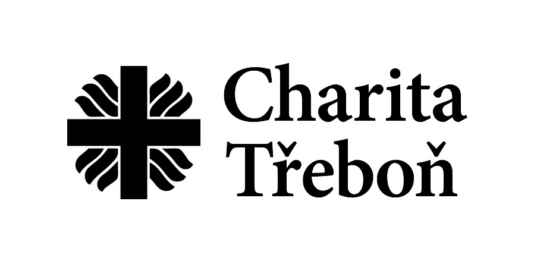

Komu pomáháte
Charita Třeboň
Charita Třeboň poskytuje sociální a zdravotní služby lidem v třeboňském regionu. Provází je v nemoci, ve stáří i v těžkých životních situacích, často přímo u nich doma.
Celý výtěžek
Výtěžek festivalu jde na služby Charity Třeboň v našem regionu.
Hudba, která pomáhá
Užijete si poslední letní večer a zároveň podpoříte dobrou věc.
Pomoc blízko nás
Podpora zůstává tady, u lidí z Třeboňska a okolí.

Pod záštitou
Města Lomnice nad Lužnicí
Akce se koná pod záštitou města Lomnice nad Lužnicí. Děkujeme panu starostovi Petru Krejníkovi a celému vedení města za dlouhodobou podporu a přízeň.